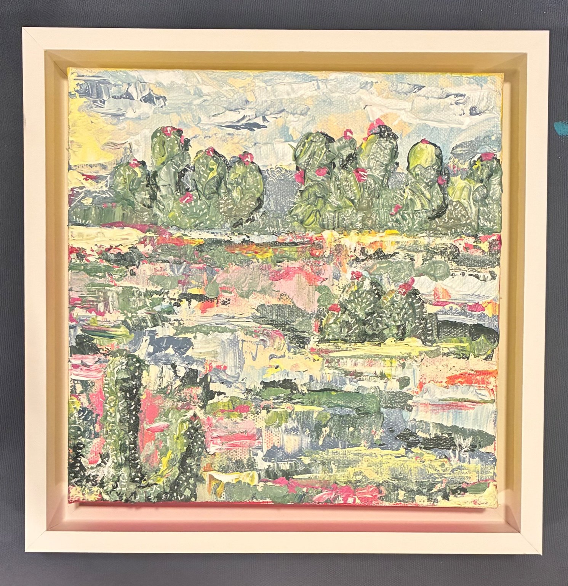

Prickled Pink
2026 · Acrylic on canvas
8 × 8 in.

Selected work · 2020–2026
Paintings and works on paper inspired by landscape, nature, travel, and the small details worth noticing.
2026 · Acrylic on canvas
8 × 8 in.
2024 · Acrylic on canvas
30 × 40 in.
2026 · Watercolor & acrylic ink on cold-pressed paper
11 × 14 in.
2026 · Watercolor & oil pastel
11 × 14 in.
2024 · Acrylic on canvas
16 × 20 in.
2023 · Watercolor & acrylic
11 × 14 in.
2022 · Acrylic on canvas
8 × 8 in.
2026 · Watercolor & acrylic ink on cold-pressed paper
11 × 14 in.
2023 · Watercolor on paper
8 × 10 in.
2026 · Watercolor & acrylic ink on cold-pressed paper
5 × 7 in.
2023 · Watercolor & acrylic ink on paper
8 × 8 in.
2026 · Watercolor on paper
4 × 6 in.
2020 · Acrylic on canvas
16 × 20 in.
2023 · Watercolor on paper
8 × 8 in.
2023 · Watercolor & acrylic ink on cold-pressed paper
8 × 8 in.
2022 · Acrylic on canvas
8 × 8 in.
2026 · Watercolor on paper
4 × 6 in.
2026 · Watercolor on cold-pressed paper
6 × 9 in.
2025 · Watercolor on paper
4 × 6 in.
2023 · Watercolor & acrylic ink on cold-pressed paper
8 × 8 in.
Jenny Green is a painter working in acrylic, watercolor, ink and mixed media. Her work moves between landscape, nature and abstraction, with an emphasis on color, texture and the character of a particular place.
Contact
jennywgreen@gmail.com